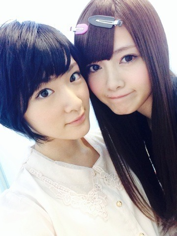

| 2013/09 27 Fri | 今日は沢山大切な事 書きますよっヽ(・ ∀・)ﾉ |
おばんです〜ヽ(・∀・)ﾉ
生駒ちゃんです！
もうすっっかり寒い！
朝外に出たら寒くて嬉しかった


まいやんおねーたまと♡
今日は劇場版BADBOYSJ 最後に守る者の上映会がありました！
生駒ちゃん初映画出演です！
よろしくお願いします(/∀｀*)
内容は見てからのお楽しみっ！
そして！
大切な事書きますとタイトルに書いているので書きます！
それはっ！
LIVEでの事なのですが

その1！
生駒ちゃんの名前を呼びたいっ！
という皆さんはそのまま生駒ちゃんと呼んでください！
生駒ちゃんは苗字で呼ばれるのがしっくりくるのでLIVEで聞こえたら嬉しくてあなたを探して何かします！
何かはLIVEでのお楽しみ〜☆
その2！
サイリウムの色は青がよいです！
もちろん！乃木坂カラーの紫もですが生駒ちゃん推しだよ〜という方はぜひ青のサイリウムをよろしくお願いします！
あっ買うの大変だったら無理しなくてよいよ！
その3！
生駒ちゃんは練習した結果‥
ウィンク出来ませんでしたっ＼('Д')／ﾝﾊﾞｯ
そうっ！
握手会などでリクエストあるのですが‥
結果ダメでした(ノω・、)
代わりに生駒ちゃんの両目ウィンクを見れますよ〜☆
一応ウィンクしてみました（笑）
という事ですっ！
今回LIVEに行けないよ〜という皆さんもいつかLIVEに来る時があると思うので覚えてて下さいねっ！
ではっ！
へばなっ！
コメント(515)
2013/09/27 22:36